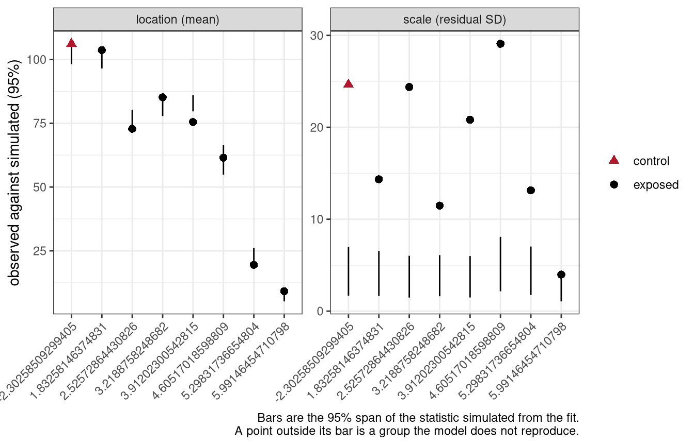
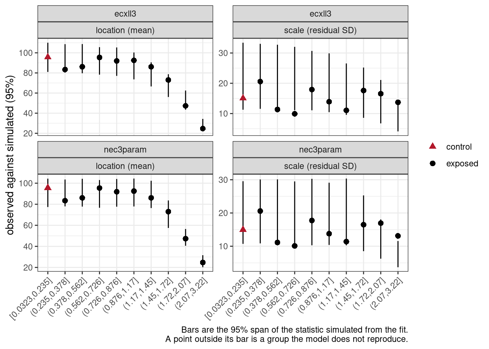
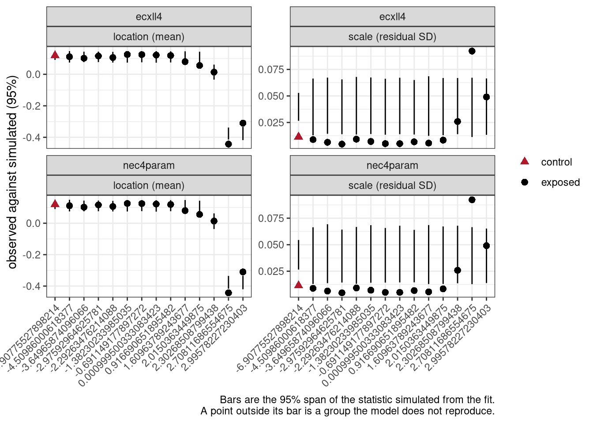
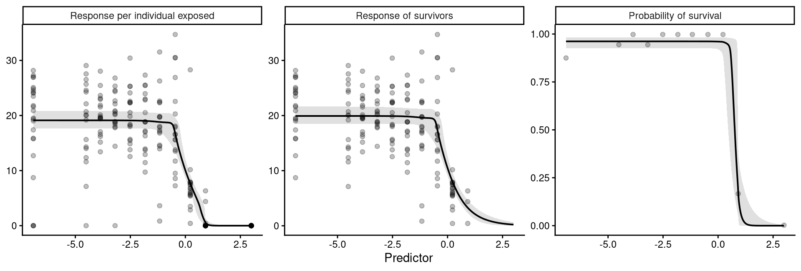
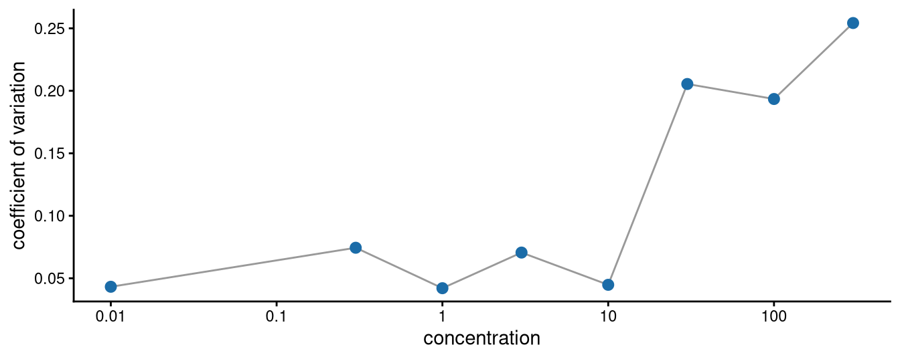
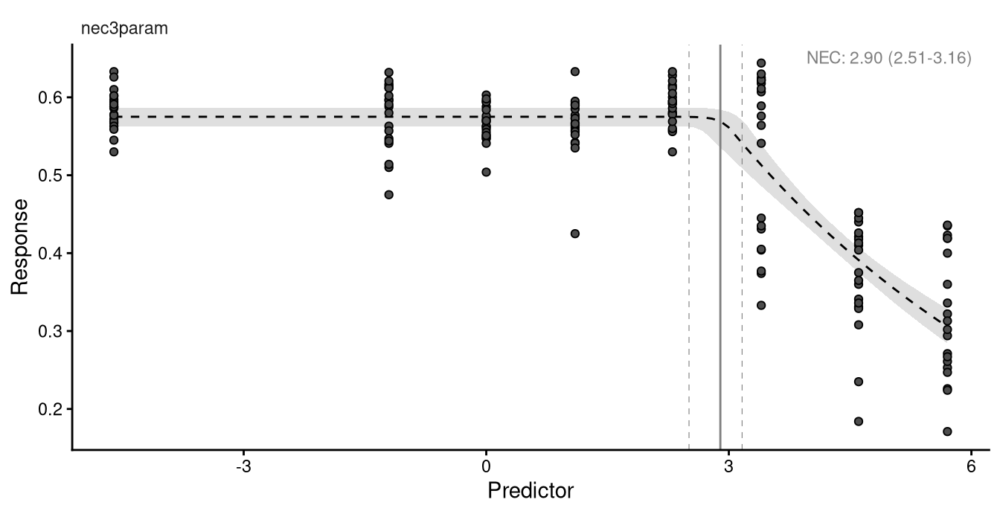
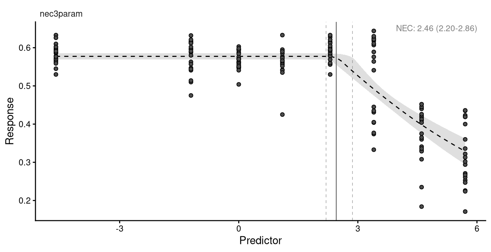
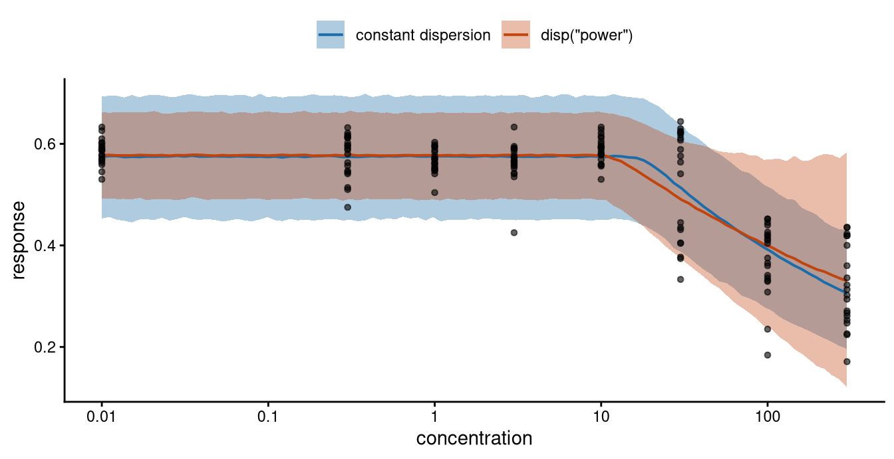
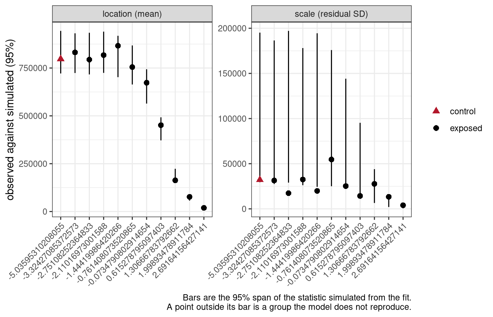

bayesnec:::supported_links()[1] "identity" "log" "logit" Matching the statistical family to the response being modelled
Concentration-response data are of varied kinds, and the measured response follows a correspondingly wide range of natural distributions. The examples below are drawn at random to show the shape of each.
Binary, modelled by the binomial or beta-binomial. Individual survival, 0 0 1 1 0 1 1 0 0 0, or counts of survivors out of a total.
Bounded continuous, modelled by the beta. Proportions or ratios that are not counts out of a total: 0.458 0.861 0.246 0.043 0.1 0.697 0.232 0.74 0.866 0.704.
Counts, modelled by the Poisson or negative binomial. Numbers of whole animals: 7 2 3 3 3 8 6 4 3 1.
Positive continuous, modelled by the gamma. Growth where shrinkage is not possible: 0.92 5.11 0.46 5.13 1.67 8.9 0.66 0.62 0.82 1.43.
Unbounded continuous, modelled by the Gaussian. Growth where shrinkage is possible: 0.08 -0.22 -0.94 0.04 -0.12 0.16 -0.8 -0.09 0.88 0.06.
Generalised modelling fits data with a statistical distribution matched to the natural range and scaling of the response, rather than assuming one.
Fitting a linear model with lm() assumes a Gaussian distribution, and so do many non-linear routines such as nls(). The normality assumption familiar from analysis of variance is the most common case of non-generalised modelling. It is sometimes reasonable, but it was adopted largely because it makes the mathematics of fitting and interval estimation tractable.
That constraint no longer applies. Matching the response to an appropriate statistical family is now standard practice, and the theory is covered well elsewhere; this module is concerned with making the right choice in bayesnec rather than with the underlying mathematics.

brmsbrms supports many families, including most of those in the base stats package that other R fitting routines use:

and a number that are specific to it:

Every statistical family has a link function. A generalised linear model relates the linear predictor to the response through it — a logit link, for example, maps the probabilities of a binary response onto an unbounded continuous scale. Generalised linear models were formulated by Nelder and Wedderburn as a unification of linear regression, logistic regression and Poisson regression, with maximum likelihood estimation of the parameters. Logistic regression is the familiar case.
The native link for a family — logit for the binomial, log for the Poisson — imposes a non-linear transformation. Concentration-response models are already non-linear and do not use linear predictors, so any further non-linearity from a link changes the model being fitted.
bayesnec therefore uses the identity link for every family. The Bayesian machinery makes this possible, because the parameters can be estimated without mapping the response onto an unbounded scale. It keeps top, bot and nec on the scale of the response, where they are directly interpretable.
bayesnec:::supported_links()[1] "identity" "log" "logit" This matters when comparing a bayesnec fit against a brms model written by hand. brms defaults to logit for a beta response and log for a Poisson, so unless the link is passed explicitly the two are different models. ECx and NSEC estimates from a fit using any link other than the identity may not behave as expected.
bayesnecnames(bayesnec:::mod_fams) [1] "gaussian" "Gamma"
[3] "poisson" "negbinomial"
[5] "bernoulli" "binomial"
[7] "beta_binomial" "beta"
[9] "hurdle_gamma" "zero_inflated_beta"
[11] "zero_inflated_poisson" "zero_inflated_negbinomial"
[13] "hurdle_poisson" "hurdle_negbinomial" The first eight are the ordinary cases covered below. hurdle_gamma, zero_inflated_beta, zero_inflated_poisson and zero_inflated_negbinomial handle responses with an excess of zeros — a separate topic, treated in the bayesnec article on hurdle families.
Adding a family is not trivial, because bayesnec generates priors and initial values by algorithms specific to each one. Requests go to the issue tracker.
With default settings bnec infers the most likely distribution from the response. That inference must be checked rather than trusted. Two questions decide whether a distribution is adequate:
Getting the dispersion right matters directly for toxicity estimates, because it sets the width of their intervals. It matters most for the NSEC, which is defined against the estimated variability in the control: overstate that variability and the estimate becomes less conservative (Fisher et al. 2023; Fisher and Fox 2023).
The sections below fit a threshold and a smooth model to each of several response types. Several of the examples come from Gerard Ricardo’s repository.
Preparing the response, near the end of the module, covers what to do where a response has already been divided by its control mean or by its observed maximum.
A response is binomial when it is a count out of a total, such as the number of survivors out of a number exposed.
binom_data <- read.csv("vignettes/example_binomial.csv") |>
mutate(log.x = log(raw_x))
summary(binom_data$raw_x) Min. 1st Qu. Median Mean 3rd Qu. Max.
0.10 10.94 37.50 99.23 125.00 400.00 head(binom_data) raw_x suc tot log.x
1 0.1 101 175 -2.302585
2 0.1 106 112 -2.302585
3 0.1 102 103 -2.302585
4 0.1 112 114 -2.302585
5 0.1 58 69 -2.302585
6 0.1 158 165 -2.302585The predictor runs from 0.1 to 400 and is strongly right skewed, which is typical of a dilution series. Transforming the predictor, usually by a logarithm, often makes fitting more stable, and the design is generally logarithmic in any case, so this example is fitted on log.x. Estimates then come back on the log scale and are returned to concentrations with the xform argument of nec(), nsec() and ecx(), which module 7 works through.
suc holds the number of successes and tot the number of trials.
For a binomial or beta-binomial response the formula takes a trials term, exactly as in brms:
suc | trials(tot) ~ crf(log.x, model = "your_model")The column to the left of the | holds the successes — survivors, fertilised eggs — and the one inside trials() the total associated with each. The names are whatever they are in your data frame.
set.seed(333)
exp_1nec <- bnec(suc | trials(tot) ~ crf(log.x, model = "nec3param"),
data = binom_data, seed = 333)
save(exp_1nec, file = "vignettes/fits/m5_exp_1nec.RData")load("vignettes/fits/m5_exp_1nec.RData")autoplot(exp_1nec)Setting all 'trials' variables to 1 by default if not specified otherwise.Ignoring unknown labels:
• fill : "NA"
• colour : "NA"
The credible bounds are very tight. The threshold model itself fits reasonably and the NEC is in a plausible place.
Bounds that look too tight are a judgement by eye, and the judgement can be made properly. dispersion() compares the variability in the data against the variability the fitted model implies:
dispersion(exp_1nec, summary = TRUE)Estimate Q2.5 Q97.5 P(>1)
17.56449 11.99124 27.08505 1.00000 For each posterior draw it forms the ratio of the observed to the simulated sum of squared Pearson residuals, and summarises those ratios to a median, a 95% interval, and P(>1), the posterior probability that the ratio exceeds 1. A value near 1 means the family’s variance assumption holds. A value well above 1 means the data are more variable than the model allows, which is over-dispersion.
Read P(>1) rather than the median, because a point estimate says nothing about how well determined it is. The statistic is symmetric, so 1 - P(>1) is the posterior probability of under-dispersion, which nothing else reports.
Here the ratio is about 18 with a 95% interval well clear of 1, and P(>1) is 1. The data are roughly eighteen times more variable than a binomial allows, which is why the credible bounds above are as narrow as they are. The eye was right in this case, and the number is what would be reported.
Two limitations apply. Each draw compares one observed residual sum against a single simulated replicate, so the spread of the result is dominated by simulation noise rather than by uncertainty about a dispersion parameter; on a small design it will detect gross over-dispersion and little else. And the screen is conditional on the model it was computed from, because a dispersion ratio cannot distinguish genuine over-dispersion from a shape that fits badly. Check that the screening fit sampled adequately, with check_sampling(), before relying on the number it reports.
dispersion() is defined for the binomial and Poisson families only, and returns an empty vector for any other. Those two are the families whose variance is fixed by their mean, so they are the only ones for which over-dispersion is a question about the family rather than a parameter the fit estimates.
Fitting a smooth curve to the same data instead:
set.seed(333)
exp_1ecx <- bnec(suc | trials(tot) ~ crf(log.x, model = "ecxll3"),
data = binom_data, seed = 333)
save(exp_1ecx, file = "vignettes/fits/m5_exp_1ecx.RData")load("vignettes/fits/m5_exp_1ecx.RData")autoplot(exp_1ecx)Setting all 'trials' variables to 1 by default if not specified otherwise.Ignoring unknown labels:
• fill : "NA"
• colour : "NA"
The bounds above are implausibly narrow for data of this kind. A binomial distribution has a single parameter, so its variance is fixed by its mean. Real counts out of a total are usually more variable than that, because the individuals within a replicate are not independent — a batch of eggs shares a parent, a container shares its conditions. This is over-dispersion.
The beta-binomial adds a second parameter and estimates the extra variation rather than assuming it away.
set.seed(333)
exp_1b <- bnec(suc | trials(tot) ~ crf(log.x, model = c("ecxll3", "nec3param")),
data = binom_data, family = "beta_binomial", seed = 333)
save(exp_1b, file = "vignettes/fits/m5_exp_1b.RData")load("vignettes/fits/m5_exp_1b.RData")autoplot(exp_1b, all_models = TRUE)Setting all 'trials' variables to 1 by default if not specified otherwise.Ignoring unknown labels:
• fill : "NA"
• colour : "NA"
Setting all 'trials' variables to 1 by default if not specified otherwise.
Ignoring unknown labels:
• fill : "NA"
• colour : "NA"
The bounds are now much wider, and they are a better description of the scatter in the data.
The beta-binomial mixes the success probability over a beta distribution, and mixing can only add variance. It therefore addresses over-dispersion and does nothing for the opposite case. A screen pointing below 1 is telling you something about the fit, the design or the process that generated the data, rather than about the family.
bayesnec once supplied this as a custom family called beta_binomial2, because brms did not provide one natively. It does now, and the family is named beta_binomial; code written against beta_binomial2 will no longer run.
The two sections above chose between two families by eye and then by a dispersion ratio. Neither generalises: the eye is unreliable, and dispersion() is defined for the binomial and Poisson alone. check_fit() is the check that applies to every family, and it is what the rest of this module uses.
A dispersion ratio is one number for the whole fit, and one number can hide a model that is right on average and wrong where it matters. check_fit(), named in module 2, makes the same comparison within concentration groups, and on a model set it reports every equation separately.
What it compares is the observed mean and the observed standard deviation within each group of the predictor against the same two statistics computed from datasets simulated by the fitted model. A family that cannot reproduce those two numbers across the concentration range is the wrong family for the response, whatever it says about the kind of quantity the response is. The control group matters most, because both nsec() and ecx() read their reference from the fitted mean there, so an error in the control propagates into every estimate the analysis reports.
Run on the binomial fit from the section above:
cf_1nec <- check_fit(exp_1nec)
cf_1nec group n obs_mean sim_mean mean_ratio ppp_mean obs_sd sim_sd
1 -2.30258509299405 6 106.167 102.000 1.041 0.010 24.642 3.861
2 1.83258146374831 6 103.667 100.167 1.035 0.031 14.344 3.939
3 2.52572864430826 6 72.833 77.500 0.940 0.999 24.383 3.345
4 3.2188758248682 6 85.167 81.333 1.047 0.012 11.478 3.451
5 3.91202300542815 6 75.500 82.833 0.911 1.000 20.819 3.497
6 4.60517018598809 6 61.500 60.500 1.017 0.371 29.085 4.782
7 5.29831736654804 6 19.500 22.333 0.873 0.906 13.147 3.975
8 5.99146454710798 6 9.167 7.667 1.196 0.158 3.973 2.464
sd_ratio ppp_sd control
1 6.383 0.000 TRUE
2 3.641 0.000 FALSE
3 7.289 0.000 FALSE
4 3.326 0.000 FALSE
5 5.953 0.000 FALSE
6 6.082 0.000 FALSE
7 3.308 0.000 FALSE
8 1.612 0.062 FALSE
The control group is flagged. nsec() reads its reference from the
control, so this is the row most likely to move a reported
no-effect concentration. See ?check_fit.obs_sd and sim_sd are the observed and simulated spread within a group, and ppp_sd is the proportion of simulated datasets in which the simulated spread was at least as large as the observed one. Read the p-values rather than the ratios, and read the control row first, because both nsec() and ecx() take their reference from the fitted mean there.
plot(cf_1nec)
check_fit() on the binomial fit. Each point is the observed statistic for one concentration group against the 95% span of what the fit simulates, with location and scale drawn separately.
The groups are labelled on the logged scale, because that is the scale the model was fitted on: -2.30 is the 0.1 control and 5.99 the highest dose of 400. Seven of the eight points on the scale panel sit above their bar, sd_ratio runs from 1.6 to 7.3, and ppp_sd is 0.000 in seven groups. Four of the eight points on the location panel sit outside their bar as well, because a variance held too low leaves the simulated mean too tightly determined to contain the observed one. This is the dispersion ratio of about 18 seen group by group.
The same check on the beta-binomial fit of the same data:
cf_1b <- check_fit(exp_1b)
cf_1b model wi group n obs_mean sim_mean mean_ratio ppp_mean
1 ecxll3 0.656 -2.30258509299405 6 106.167 107.500 0.988 0.577
2 ecxll3 0.656 1.83258146374831 6 103.667 105.167 0.986 0.576
3 ecxll3 0.656 2.52572864430826 6 72.833 80.500 0.905 0.860
4 ecxll3 0.656 3.2188758248682 6 85.167 81.500 1.045 0.258
5 ecxll3 0.656 3.91202300542815 6 75.500 74.000 1.020 0.420
6 ecxll3 0.656 4.60517018598809 6 61.500 57.667 1.066 0.367
7 ecxll3 0.656 5.29831736654804 6 19.500 31.333 0.622 0.903
8 ecxll3 0.656 5.99146454710798 6 9.167 11.333 0.809 0.623
9 nec3param 0.344 -2.30258509299405 6 106.167 104.167 1.019 0.407
10 nec3param 0.344 1.83258146374831 6 103.667 102.833 1.008 0.467
11 nec3param 0.344 2.52572864430826 6 72.833 79.667 0.914 0.831
12 nec3param 0.344 3.2188758248682 6 85.167 83.000 1.026 0.364
13 nec3param 0.344 3.91202300542815 6 75.500 81.833 0.923 0.750
14 nec3param 0.344 4.60517018598809 6 61.500 54.333 1.132 0.263
15 nec3param 0.344 5.29831736654804 6 19.500 28.833 0.676 0.839
16 nec3param 0.344 5.99146454710798 6 9.167 14.833 0.618 0.766
obs_sd sim_sd sd_ratio ppp_sd control
1 25.398 14.435 1.759 0.096 TRUE
2 15.212 14.271 1.066 0.444 FALSE
3 24.582 11.892 2.067 0.058 FALSE
4 11.497 13.376 0.860 0.647 FALSE
5 20.153 16.183 1.245 0.285 FALSE
6 29.205 20.566 1.420 0.116 FALSE
7 14.449 19.532 0.740 0.754 FALSE
8 3.550 12.559 0.283 0.962 FALSE
9 24.874 16.227 1.533 0.149 TRUE
10 14.658 15.962 0.918 0.578 FALSE
11 24.475 12.224 2.002 0.057 FALSE
12 11.373 12.790 0.889 0.594 FALSE
13 20.758 14.383 1.443 0.165 FALSE
14 29.356 20.897 1.405 0.123 FALSE
15 14.110 19.492 0.724 0.772 FALSE
16 3.475 14.184 0.245 0.984 FALSE
One or more groups show a posterior predictive p-value beyond
[0.05, 0.95]. See ?check_fit.plot(cf_1b)
No group is flagged on the mean for either equation. On spread, only the highest concentration is flagged, where the fit simulates three to four times the observed variability. Six replicates at a response near complete mortality supply very little information about spread, so this is what the top of a series usually looks like rather than a fault in the family.
brms::pp_check() shows the same comparison as distributions rather than as summary statistics, and module 7 uses it on a continuous response. The grouped form is the one to use, type = "dens_overlay_grouped" for a continuous response and type = "bars_grouped" for a discrete one: pooled over the whole dataset a model can match the overall distribution while being wrong at every concentration.
A response bounded between 0 and 1 that is not a count out of a total is modelled by the beta distribution. Maximum quantum yield from PAM fluorometry is a common example in coral work: a proportion of light used in photosynthesis, with no underlying trials to count.
prop_data <- read.csv("vignettes/example_proportion.csv") |>
mutate(log.x = log(raw_x))set.seed(333)
exp_2 <- bnec(resp ~ crf(log.x, model = c("ecxll3", "nec3param")),
data = prop_data, seed = 333)
save(exp_2, file = "vignettes/fits/m5_exp_2.RData")load("vignettes/fits/m5_exp_2.RData")autoplot(exp_2, all_models = TRUE)Ignoring unknown labels:
• fill : "NA"
• colour : "NA"
Ignoring unknown labels:
• fill : "NA"
• colour : "NA"
exp_2$mod_stats model waic wi dispersion_Estimate dispersion_Q2.5
ecxll3 ecxll3 -417.8802 0.01528452 NA NA
nec3param nec3param -433.5478 0.98471548 NA NA
dispersion_Q97.5 dispersion_P_over_1
ecxll3 NA NA
nec3param NA NAThe beta has two parameters, so it can generally accommodate the variance in the data, and these bounds are reasonable. The threshold model takes most of the weight here and describes the data much better than the three-parameter log-logistic.
bnec() also flags the control group for both equations. That is the check_fit() comparison named in module 2, run over every equation in the set and reported where it fails, and the control is singled out because nsec() reads its reference from there. Running check_fit() gives the per-group table:
cf_2 <- check_fit(exp_2)
cf_2[, c("model", "wi", "group", "mean_ratio", "ppp_mean",
"sd_ratio", "ppp_sd", "control")] model wi group mean_ratio ppp_mean sd_ratio ppp_sd
1 ecxll3 0.015 -4.60517018598809 0.994 0.590 0.398 1.000
2 ecxll3 0.015 -1.20397280432594 0.983 0.711 0.671 0.979
3 ecxll3 0.015 0 0.976 0.808 0.376 1.000
4 ecxll3 0.015 1.09861228866811 0.984 0.707 0.616 0.994
5 ecxll3 0.015 2.30258509299405 1.071 0.009 0.410 1.000
6 ecxll3 0.015 3.40119738166216 1.034 0.176 1.660 0.000
7 ecxll3 0.015 4.60517018598809 0.910 0.984 1.135 0.213
8 ecxll3 0.015 5.7037824746562 1.118 0.012 1.402 0.018
9 nec3param 0.985 -4.60517018598809 1.015 0.263 0.414 1.000
10 nec3param 0.985 -1.20397280432594 1.001 0.486 0.708 0.969
11 nec3param 0.985 0 0.986 0.725 0.395 1.000
12 nec3param 0.985 1.09861228866811 0.980 0.766 0.651 0.991
13 nec3param 0.985 2.30258509299405 1.026 0.170 0.438 1.000
14 nec3param 0.985 3.40119738166216 1.019 0.303 1.758 0.000
15 nec3param 0.985 4.60517018598809 0.954 0.877 1.208 0.118
16 nec3param 0.985 5.7037824746562 1.042 0.220 1.437 0.010
control
1 TRUE
2 FALSE
3 FALSE
4 FALSE
5 FALSE
6 FALSE
7 FALSE
8 FALSE
9 TRUE
10 FALSE
11 FALSE
12 FALSE
13 FALSE
14 FALSE
15 FALSE
16 FALSE
The control group is flagged. nsec() reads its reference from the
control, so this is the row most likely to move a reported
no-effect concentration. See ?check_fit.plot(cf_2)
check_fit() on the beta fit, reported for each equation in the set. The eight concentrations are design points with twenty replicates each, so no binning is needed.
nec3param holds 0.99 of the weight, so it is the row set to read. Its group means are reproduced, with mean_ratio at the control of 1.01 and every point in its location panel inside its bar; ecxll3 misses on location in three groups of eight, which is what an equation of the wrong shape looks like and is why it holds the weight it does. What fails for both is the spread: sd_ratio at the control is 0.41, so the fit simulates about two and a half times the variability the twenty control replicates show, and ppp_sd of 1.00 puts the observed spread at the extreme of what the fit produces. The cause is that a beta fit holds one precision parameter across the whole series while the observed variability in these data rises with concentration, which Modelling dispersion below takes apart and measures. Do not report an NSEC from this fit without reading that section.
The predictor was logged in the formula, as in the binomial example above. Estimates returned by nec(), nsec() and ecx() are then on the log scale, and xform = exp returns them to concentrations.
A beta distribution is defined on the open interval between 0 and 1, so a response recorded as exactly 0 or exactly 1 lies outside it. This is common: complete mortality at the highest concentration, or complete survival in the controls, both produce boundary values.
bayesnec shifts them rather than refusing the fit. A zero becomes one tenth of the smallest non-zero value in the response, which scales with the data, and a one is reduced by an absolute 0.001. bnec_record() names every value it altered:
bnec_record(exp_2)$substitutionsNULLNULL means the response was fitted as recorded. Where it is not NULL, the analysis was run on shifted values, and a series with several concentrations sitting at a boundary is being modelled through that shift rather than as measured. A methods section has to say so.
Where the boundary values mean something different from a very small response — an organism that died, rather than one that grew very little — the shift is the wrong treatment altogether. The section on zeros below covers that case.
Counts of whole things — individuals, cells — are theoretically Poisson distributed: integers from zero upwards. This example builds over-dispersed counts from the package’s example data, in order to show what the negative binomial is for. Real count data are sometimes genuinely Poisson, so check before assuming otherwise.
set.seed(333)
data(nec_data)
count_data <- nec_data |>
mutate(
y = (y * 100 + rnorm(nrow(nec_data), 0, 15)) |>
round() |> as.integer() |> abs()
)
str(count_data)'data.frame': 100 obs. of 2 variables:
$ x: num 1.019 0.816 0.371 0.401 1.295 ...
$ y: int 85 120 54 96 64 88 111 92 99 86 ...set.seed(333)
exp_3 <- bnec(y ~ crf(x, model = c("ecxll3", "nec3param")), data = count_data)
save(exp_3, file = "vignettes/fits/m5_exp_3.RData")load("vignettes/fits/m5_exp_3.RData")autoplot(exp_3, all_models = TRUE)Ignoring unknown labels:
• fill : "NA"
• colour : "NA"
Ignoring unknown labels:
• fill : "NA"
• colour : "NA"
The dispersion screen applies here for the same reason it applied to the binomial: a Poisson has one parameter, so its variance is fixed by its mean. dispersion() takes a single fit and stops on a model set, so for a set the figures are read from the summary, which reports them for every equation alongside its weight:
summary(exp_3)$mod_weights waic wi dispersion_Estimate dispersion_Q2.5
ecxll3 988.9497 0.07795462 3.534905 2.713561
nec3param 957.5460 0.92204538 3.226219 2.482026
dispersion_Q97.5 dispersion_P_over_1
ecxll3 4.734219 1
nec3param 4.333053 1nec3param holds 0.92 of the weight and its dispersion estimate is 3.23, with a 95% interval from 2.48 to 4.33 and P(>1) of 1. These counts are about three times more variable than a Poisson allows.
Read the dispersion against the weight rather than on its own. A ratio computed for an equation that fits badly counts the variation its curve cannot describe as dispersion, so it fails the screen whatever the data are doing, and it holds almost no weight for the same reason. A failure matters where it belongs to an equation that contributes to the averaged estimate, which is the case here.
check_fit() shows where that extra variation sits. These counts were built from nec_data, whose predictor takes a different value in almost every replicate, so there are no concentration groups to compare within and check_fit() cuts the predictor into ten bins instead. A bin is not a design point, so read the pattern across the bins rather than any single row.
plot(check_fit(exp_3))
check_fit() on the Poisson fit, with the predictor cut into ten bins.
The means are reproduced, one bin excepted. On spread, six of the ten bins for nec3param sit above their bar, and every bin has sd_ratio above 1, running from 1.11 to 2.70 with the two largest values in the top two bins. The counts are more variable than a Poisson allows across the whole series rather than in one part of it.
A count is very often observed over an exposure that differs between replicates: offspring counted where the number of fecund adults differs, cells counted over different areas, events counted over different lengths of time. The rate term declares that exposure, and is available for the Poisson and negative binomial families:
y | rate(n_females) ~ crf(x, model = "nec4param")The raw counts are passed to bnec() unchanged, so a replicate with twenty females contributes more information than one with eight. Fitting y / n_females as a continuous response would discard exactly that.
Because bayesnec uses an identity link, brms applies the denominator multiplicatively on the response scale rather than as a log offset on a linear predictor. The fitted mean therefore is the rate, and top, bot and nec are directly interpretable as offspring per female. The prediction grid holds the denominator at 1, and autoplot() divides the observed counts through to match.
One caveat decides whether rate is the right tool. Where the exposure varies for reasons unrelated to the treatment, because a replicate simply received fewer animals, rate does what is wanted. Where the exposure is itself an effect of the treatment, as it would be if the denominator were the number of females surviving to the point of counting, the endpoint has quietly changed from reproductive output to fecundity conditional on survival. Both are legitimate endpoints and they will not return the same NEC.
The Poisson has one parameter, so like the binomial its variance is determined by its mean. Counts that are more variable than that need the negative binomial, which estimates the additional variation.
set.seed(333)
exp_3b <- bnec(y ~ crf(x, model = c("ecxll3", "nec3param")),
data = count_data, family = "negbinomial")
save(exp_3b, file = "vignettes/fits/m5_exp_3b.RData")load("vignettes/fits/m5_exp_3b.RData")autoplot(exp_3b, all_models = TRUE)Ignoring unknown labels:
• fill : "NA"
• colour : "NA"
Ignoring unknown labels:
• fill : "NA"
• colour : "NA"
The bounds widen, as they did for the beta-binomial, and for the same reason.
The same check on this fit:
plot(check_fit(exp_3b))
check_fit() on the negative binomial fit of the same counts.
No bin is flagged on the mean. On spread, two of the ten bins for nec3param sit outside their bar against six under the Poisson, and sd_ratio now runs from 0.54 to 1.90, so the misses fall on both sides rather than all in one direction. The two are the highest bin, where the fit simulates less spread than the counts show, and one in the middle of the decline, where it simulates about twice as much.
A continuous response that cannot be negative — a length, a mass, a rate where shrinkage is impossible — is modelled by the gamma.
data(nec_data)
measure_data <- nec_data |>
mutate(measure = exp(y))set.seed(333)
exp_4 <- bnec(measure ~ crf(x, model = c("ecxll3", "nec3param")),
data = measure_data)
save(exp_4, file = "vignettes/fits/m5_exp_4.RData")load("vignettes/fits/m5_exp_4.RData")autoplot(exp_4, all_models = TRUE)Ignoring unknown labels:
• fill : "NA"
• colour : "NA"
Ignoring unknown labels:
• fill : "NA"
• colour : "NA"
A gamma has two parameters, so like the beta and the negative binomial it estimates its own spread rather than fixing it by the mean. What it does fix is the relative spread: a gamma holds the coefficient of variation constant, so the standard deviation it simulates is a fixed fraction of the fitted mean. Whether that suits the data is what the check answers.
cf_4 <- check_fit(exp_4)
plot(cf_4)
check_fit() on the gamma fit. The predictor takes a different value in almost every replicate, so the range is cut into ten bins.
nec3param holds essentially all of the weight, so read its two panels. Its means are reproduced across the series, one bin excepted. Its spread is not, and the failure is the one the family’s own assumption predicts: the simulated coefficient of variation is 0.06 in every bin, while the observed one rises from 0.04 at the control to 0.11 at the top of the series. The consequence is a sd_ratio below 1 over the flat part of the curve, where the fit simulates about half again the spread the data show, and above 1 at the highest concentrations, where it simulates less than the data show.
cf_4b <- subset(as.data.frame(cf_4), model == "nec3param")
data.frame(group = cf_4b$group,
observed_cv = round(cf_4b$obs_sd / cf_4b$obs_mean, 3),
simulated_cv = round(cf_4b$sim_sd / cf_4b$sim_mean, 3),
sd_ratio = round(cf_4b$sd_ratio, 2)) group observed_cv simulated_cv sd_ratio
1 [0.0323,0.235] 0.040 0.061 0.66
2 (0.235,0.378] 0.043 0.060 0.72
3 (0.378,0.562] 0.025 0.061 0.41
4 (0.562,0.726] 0.038 0.061 0.62
5 (0.726,0.876] 0.033 0.061 0.56
6 (0.876,1.17] 0.044 0.059 0.75
7 (1.17,1.45] 0.049 0.061 0.81
8 (1.45,1.72] 0.066 0.061 1.14
9 (1.72,2.07] 0.071 0.061 1.11
10 (2.07,3.22] 0.106 0.062 1.65A constant coefficient of variation is exactly what a gamma asserts, so this is the family being wrong about these data rather than the fit being run badly. Modelling dispersion below is the repair, and it is the same pattern the beta example showed on a different family: the response type points at a family, and the check decides whether that family can describe the spread as well as the range.
A continuous response that can take negative values is modelled by the Gaussian. Growth rates are the usual case, where an organism may shrink, and so are responses that have been transformed onto an unbounded scale. Here the proportion data above are put on a logit scale.
gaussian_data <- prop_data |>
mutate(y = car::logit(resp))set.seed(333)
exp_5 <- bnec(y ~ crf(log.x, model = c("ecxll4", "nec4param")),
data = gaussian_data, seed = 333)
save(exp_5, file = "vignettes/fits/m5_exp_5.RData")load("vignettes/fits/m5_exp_5.RData")autoplot(exp_5, all_models = TRUE)Ignoring unknown labels:
• fill : "NA"
• colour : "NA"
Ignoring unknown labels:
• fill : "NA"
• colour : "NA"
Transforming a bounded response onto an unbounded scale and modelling it as Gaussian is one way of handling proportion data, and it was standard practice before generalised methods were routine. Modelling the response on its own scale with the beta, as above, is preferable: it keeps the parameters interpretable as proportions, and it does not require the transformation to have made the variance constant.
check_fit() measures the last of those. These are the proportion data of the beta example, so the eight concentrations are design points with twenty replicates each and no binning is needed:
cf_5 <- check_fit(exp_5)
cf_5[, c("model", "wi", "group", "sd_ratio", "ppp_sd", "control")] model wi group sd_ratio ppp_sd control
1 ecxll4 0.366 -4.60517018598809 0.399 1.000 TRUE
2 ecxll4 0.366 -1.20397280432594 0.685 0.976 FALSE
3 ecxll4 0.366 0 0.377 1.000 FALSE
4 ecxll4 0.366 1.09861228866811 0.624 0.988 FALSE
5 ecxll4 0.366 2.30258509299405 0.425 1.000 FALSE
6 ecxll4 0.366 3.40119738166216 1.705 0.001 FALSE
7 ecxll4 0.366 4.60517018598809 1.316 0.042 FALSE
8 ecxll4 0.366 5.7037824746562 1.502 0.003 FALSE
9 nec4param 0.634 -4.60517018598809 0.402 1.000 TRUE
10 nec4param 0.634 -1.20397280432594 0.687 0.977 FALSE
11 nec4param 0.634 0 0.381 1.000 FALSE
12 nec4param 0.634 1.09861228866811 0.625 0.988 FALSE
13 nec4param 0.634 2.30258509299405 0.424 1.000 FALSE
14 nec4param 0.634 3.40119738166216 1.710 0.001 FALSE
15 nec4param 0.634 4.60517018598809 1.313 0.043 FALSE
16 nec4param 0.634 5.7037824746562 1.517 0.002 FALSEplot(cf_5)
check_fit() on the Gaussian fit of the logit-transformed proportions.
The means are reproduced for both equations. The spread is not, and it misses in opposite directions at the two ends of the series. For nec4param, sd_ratio is 0.38 at the control, where the fit simulates about two and a half times the observed variability, and it is above 1.3 at the three highest concentrations, where it simulates less variability than the data show. One standard deviation is describing a series whose variability changes with concentration, and the logit transformation has not removed that change. Modelling dispersion below takes the same data on the beta scale and measures what the disp term does about it.
A growth rate is the common Gaussian case in ecotoxicology, and it comes with a naming convention that is worth getting right. OECD Test Guideline 201 (OECD 2026) distinguishes two response variables from the same experiment. The average specific growth rate is the logarithmic increase in biomass over the exposure period, and an effect concentration derived from it is written ErCx. Yield is the biomass at the end of the period minus the biomass at the start, and its effect concentration is written EyCx. The guideline states that an ErCx will generally be higher than the corresponding EyCx, and that growth rate is the scientifically preferred basis; yield is retained to satisfy current regulatory requirements. An estimate reported without one of those prefixes has not said which quantity it describes.
A growth rate can be negative, because a population can decline. That rules out every family bounded below at zero, and it also rules out the equations whose lower asymptote is fixed at zero, since those cannot predict a negative response. The bayesnec article on growth data and other potentially negative responses covers the consequences, which reach the choice of both the family and the candidate set.
Not every equation suits every family. A model predicting negative values cannot be used with a response that must be positive, and bayesnec discards any model in a requested set that is unsuitable for the distribution of the response. This is why a set of twenty-three may return fewer than twenty-three fits, and why the zero_bounded set exists.
Three rules account for most of the exclusions.
Equations with an exponential decay and no bot parameter approach zero and cannot go below it, so they cannot describe a Gaussian response, or any response fitted through a log or logit link.
Equations with a linear decay, whose names contain lin, decline without limit, so they cannot describe a response bounded below at zero under an identity link. That covers the gamma, Poisson, negative binomial, binomial, beta and beta-binomial families.
Equations that raise the predictor to a fractional power cannot be evaluated where the predictor is negative, which a logged concentration series is wherever the concentration falls below 1.
You do not have to apply these yourself. bnec() excludes what it cannot fit and reports the reason, and bnec_record() keeps that reason on the fitted object:
bnec_record(exp_2)$excluded[1] model reason
<0 rows> (or 0-length row.names)No rows, because that fit named two equations explicitly and both are valid for a beta response on an identity link. A set requested as "all" on the same data returns several rows, with the rule each equation failed against.
Everything above assumes each recorded value is a measurement of the response. In real datasets some are not. A value below a detection limit and a zero that marks a death are both written down as numbers and neither is a measurement of the response, and the two need different treatment from one another. This section and the two that follow take them in turn.
A value is censored when the truth is known to lie in an interval rather than at a point: a concentration below a limit of detection, a cell count below the resolution of the counting method, a value rounded at the precision it was recorded to. The number written down is a bound rather than a measurement.
The usual treatments are to substitute something for it, commonly half the detection limit, or to delete the row. Helsel (2006) reviewed two decades of work on both and is blunt about the first: substituted values using any fraction between 0 and 0.99 of the detection limit are “equivalently arbitrary, equivalently precise, equivalently wrong”. Deleting is worse, because it removes the observations at the low end and biases every subsequent estimate of location upwards.
bayesnec passes through the cens() term from brms, so the bound can be declared instead of disguised:
y | cens(censoring) ~ crf(x, model = "nec4param")censoring is a column in the data rather than a constant, because in a concentration-response dataset only some rows are censored. It takes the values "none", "left", "right" or "interval". Interval censoring takes a second argument giving the upper bound, as cens(censoring, upper).
The response column holds the bound. On a left-censored row, the number in the response column is the value the truth is known to be at or below, rather than zero and rather than a guess at the unknown truth.
What this changes is the contribution each row makes to the likelihood. An ordinary row contributes a density at a point, which falls away as the fitted curve departs from it, so a substituted value actively pulls the curve back towards the number that was substituted. A censored row instead contributes the probability of falling at or below the bound. As the curve descends past the bound that probability rises towards 1 and then saturates: the curve is neither rewarded for passing further below nor penalised for it.
A zero needs a different treatment depending on what produced it, and the three cases are distinguishable from the design rather than from the data.
A zero that is a measurement below the resolution of the method is censored, and belongs in the previous section.
A zero that marks a distinct event is structural. An organism that died did not grow slowly; its growth is undefined rather than small. A response of this kind has two processes behind it, one deciding whether the event occurred and one generating the response when it did not, and a two-block model fits both.
A zero that is an ordinary draw from a distribution admitting zeros is not evidence of anything at all. Warton (2005) makes the point directly: many zeros does not mean zero inflation, and a Poisson or negative binomial with a low mean produces plenty of them. Fit the simpler family and check it before reaching for a two-block model. Martin et al. (2005) sets out how to decide which of the three you are looking at, from what the experiment did rather than from a test.
Both names describe a two-block model and they are not interchangeable. The distinction is whether the zeros are observed or latent, and it decides whether the second block is worth interpreting.
Under a hurdle the zeros are observed to be structural. The individual died, or the replicate failed, and you know which observations those are. The likelihood then separates exactly into a block for whether the event occurred and a block for the response given that it did not, and both blocks describe a curve you can read a threshold from.
Under zero inflation a zero could have come from either component, and nothing in the data says which. The two are therefore weakly separated precisely where the ordinary component is small, which is the high-concentration end that determines the NEC. A threshold fitted to the zero-inflation component there describes a class of observation nobody measured.
The practical rule follows from the design rather than from the data. Where you recorded why each zero occurred, a hurdle is available and its second block means something. Where you did not, zero inflation is the description the data support, and the second block should not be read as a concentration-response curve.
bayesnec supplies hurdle_gamma for a positive continuous response with structural zeros, and the zero-inflated beta, Poisson and negative binomial:
names(bayesnec:::mod_fams) [1] "gaussian" "Gamma"
[3] "poisson" "negbinomial"
[5] "bernoulli" "binomial"
[7] "beta_binomial" "beta"
[9] "hurdle_gamma" "zero_inflated_beta"
[11] "zero_inflated_poisson" "zero_inflated_negbinomial"
[13] "hurdle_poisson" "hurdle_negbinomial" bnec_hurdle() and bnec_joint() fit the two blocks. The worked example below fits one; the bayesnec article on hurdle and zero-inflated models covers the rest, including the crossed weights of the two model sets and when the joint form is needed rather than the factorised one.
One trap is worth naming even though it is not taught. Fitting the positive part of a count response by dropping the zeros and using an ordinary Poisson is not the same model: with the zeros removed the remaining counts follow a zero-truncated Poisson, so an untruncated fit estimates the wrong quantity. The error grows as the mean falls towards zero, which is the high-concentration end that an NEC or an ECx is read from. The equivalent construction for hurdle_gamma is exact, because a gamma distribution has no mass at zero to begin with, which is why the problem appears only for counts.
The nassarius dataset ships with bayesnec and holds chronic toxicity tests on the tropical marine snail Nassarius dorsatus, one row per individual snail that entered the experiment. The contaminants are anonymised as A to D and the dose units are not stated, so only the relative spacing of doses is preserved, which is all a toxicity estimate depends on. Contaminant A is used here.
data(nassarius)
snail <- subset(nassarius, contaminant == "A")
str(snail)'data.frame': 204 obs. of 6 variables:
$ contaminant: Factor w/ 4 levels "A","B","C","D": 1 1 1 1 1 1 1 1 1 1 ...
$ dose : num 0 0 0 0 0 0 0 0 0 0 ...
$ tank : chr "A-1" "A-1" "A-1" "A-1" ...
$ alive : int 1 1 1 1 1 0 1 1 1 1 ...
$ growth : num 8.72 28.17 27.28 15.86 19.02 ...
$ record : Factor w/ 5 levels "measured","sentinel_code",..: 1 1 1 1 1 2 1 1 1 1 ...The response is growth, which is positive and continuous, so the survivors are a gamma. alive records which snails died, so the zeros are observed rather than inferred and a hurdle is available.
tapply(snail$alive, snail$dose, function(z) sprintf("%d of %d", sum(z), length(z))) 0 0.01 0.02 0.04 0.08 0.16 0.31
"21 of 24" "17 of 18" "18 of 18" "17 of 18" "18 of 18" "18 of 18" "18 of 18"
0.63 1.25 2.5 20
"18 of 18" "18 of 18" "3 of 18" "0 of 18" Mortality is confined to the top two doses and is complete at the highest. That is what makes the endpoint worth fitting as two blocks rather than one. A survivors-only analysis of these data would contain 166 snails of the 204 exposed, and the dose of 20 would not appear in it at all, because a dose at which nothing survived contributes no rows. The dose that killed every animal is the most informative one in the experiment and it is the one that dropping the dead removes.
Two preparation steps are needed and both are stated rather than done quietly. The assay references each snail to a baseline mean rather than to its own starting size, so a few survivors are recorded at or below zero; those are measurement noise around a true value near zero rather than deaths, and they are nudged to half the smallest positive growth in the test. And the doses span several orders of magnitude, so the fit is on a log scale, which needs the control placed somewhere other than log(0): one decade below the lowest tested dose is far enough to read as a control and close enough not to stretch the fitted range.
pos_min <- min(snail$growth[snail$growth > 0])
snail$growth <- ifelse(snail$alive == 1 & snail$growth <= 0, pos_min / 2,
snail$growth)
offset <- min(snail$dose[snail$dose > 0]) / 10
snail$log_dose <- log(snail$dose + offset)
back <- function(z) exp(z) - offsetbnec_hurdle() takes the formula for the growth block and fits a survival block alongside it. The same model set is used for both here, and adapt_delta is raised because the survival curve is determined by two doses and samples awkwardly at the default.
set.seed(333)
exp_6 <- bnec_hurdle(growth ~ crf(log_dose, model = c("nec3param", "ecxll3")),
data = snail, seed = 333,
control = list(adapt_delta = 0.99))
save(exp_6, file = "vignettes/fits/m5_exp_6.RData")load("vignettes/fits/m5_exp_6.RData")summary(exp_6, xform = back)Object of class bayesnechurdlefit
204 individuals exposed; 38 recorded as zero ( 18.6% )
growth : gamma -- nec3param, ecxll3
survival : bernoulli -- nec3param, ecxll3
No-effect toxicity estimates
Q50 Q2.5 Q97.5
combined (N(S)EC) 0.56 0.21 0.75
growth (N(S)EC) 0.56 0.23 0.75
survival (N(S)EC) 1.72 1.09 2.41
NSEC values appear where a model set contains smooth (ECx) models, which
carry no threshold parameter; N(S)EC is a model-averaged combination
of the two (Fisher et al. 2023).
The combined endpoint is the expected response per individual exposed,
i.e. growth * survival. Use which = to select a component.Three estimates are reported rather than one. Growth is the response of the snails that lived, which is what a survivors-only analysis would return. Survival is the probability of living to be measured. Combined is the expected growth per individual exposed, which is growth multiplied by survival, and it is the endpoint a risk assessment asks about, because an individual that died did not grow.
Growth and survival separate: growth declines from a no-effect estimate of about 0.56 while survival holds to about 1.72, a factor of three. The combined estimate follows growth here, because growth is the more sensitive of the two and the combined endpoint is bounded by whichever declines first.
autoplot(exp_6, which = "all")
The right-hand panel is the one a survivors-only analysis cannot produce at any level of effort. Its shape comes entirely from the two doses where snails died, and the highest of those contributes no rows to a dataset of survivors.
Supply the response as it was measured, and match a statistical family to it. The common alternative is to convert it first, to percent inhibition, percent of control or percent of the observed maximum. That conversion introduces error, and the family choice set out above avoids it.
Normalising to the control is conventional in ecotoxicology, usually as \(y^0_i = 1 - y_i / \bar{y}_{con}\), where \(\bar{y}_{con}\) is the mean of three to six control replicates. Ritz et al. (2026) measured what it does.

ecx() returns by default.bnec() looks for both practices and reports them.Many proportional responses need no divisor at all. The maximum quantum yield used in module 7 is a genuine physical proportion, as is a survival fraction or a bleached-area fraction, and these are modelled as they stand.
From the simulation of an ED10 with six control replicates in Ritz et al. (2026): normalising gave a bias of 6.8% and a coefficient of variation of 26.4%, against 2.1% and 12.7% for the same quantity estimated from the raw response, and nominal 95% intervals covered at 90% rather than 95%. With a single control replicate the coverage of the normalised analysis fell to 57%.
ecx() returns a decline relative to the fitted control rather than to an observed control mean, and because it is evaluated separately within every posterior draw the uncertainty about the control level propagates into the credible interval instead of being thrown away.
Dividing by the observed maximum is worse than dividing by the control mean on three counts. An extreme order statistic is more variable and more biased than a mean of three to six values. The divisor then depends on every treatment rather than on the controls alone, so treated groups partly determine their own denominator. And it forces exactly one observation to exactly 1, which is outside the open interval a beta distribution is defined on, so bnec() has to shift it off the boundary.
bnec() detects both practices from the response as supplied. Dividing by the observed maximum leaves a maximum of exactly 1 attained by exactly one observation, and dividing by the control mean leaves the control observations averaging to exactly 1. The first check is suppressed where the response lies on a rational grid, because a genuine count-derived proportion such as 19 of 20 surviving routinely produces a single observation at 1 and is not evidence of anything.
A response above 1 that has to be modelled with a beta distribution needs a divisor. It must be a constant settled before the analysis: a physiological or design ceiling, or a value from accumulated historical controls. Ritz et al. (2026) are explicit that the problem is dividing by something random rather than dividing as such. An ECx is unaffected by the choice of a constant divisor, because it is a relative decline from the fitted top, and the same holds for any linear rescaling of the response (Weimer et al. 2012).
Dividing by the observed maximum is often done for a reason that has nothing to do with normalisation. A response on an arbitrary scale, such as a luminescence reading or a cell count, is divided to put it between 0 and 1 so that a beta distribution can be used, because the beta accommodates variability that changes with the mean and a Gaussian does not.
That reasoning identifies a real problem and answers it indirectly. The problem is that replicate variability at the high concentrations is not the same as at the control. The direct answer is the subject of this module: keep the response on its own scale, choose the family that suits it, and model the variability explicitly where it changes. The sections above covered the choice of family, and the section below covers the disp term for a dispersion that varies across the series.
Doing it that way keeps top, bot and nec in the units the experiment was measured in, avoids the bias Ritz et al. (2026) measured, and states the change in variability as something estimated from the data rather than absorbed by a transformation. It also avoids forcing an observation onto the boundary of the beta’s support, which division by a maximum does by construction.
Everything above chooses a family from what kind of quantity the response is. Sometimes the family that is right on those grounds still fails the check: it cannot reproduce the observed spread across the concentration range, and check_fit() says so. Three fits above are such a case: the beta fit of the proportion data, the Gaussian fit of the same data on a logit scale, and the gamma fit, whose constant coefficient of variation the data do not have. This section is what to do about it.
The reason a correct family can still fail is an assumption made by default and rarely stated. A fit holds the dispersion parameter of the chosen family constant across the whole concentration-response curve. For a Gaussian response that assumes replicate variability is the same at every concentration; for the other families it assumes the coefficient of variation, or the precision, does not change with the mean. Real series often violate it, because variability at a concentration that has killed most of the organisms is not the variability of an untreated control.
Where that is wrong the consequences fall on the credible intervals of the toxicity estimates, and they fall unevenly, because the assumed variability is too large at one end of the series and too small at the other. The NSEC is affected most, for the reason the binomial section gave: its reference is a quantile of the control posterior, and the width of that posterior is the variability the fit estimated at the control.
The disp term relaxes the assumption, letting the spread vary rather than taking one value for the whole series:
y ~ crf(x, model = "nec4param") + disp(~x) # varies along the predictor
y ~ crf(x, model = "nec4param") + disp("power") # varies with the fitted meanReach for it when the check has failed rather than as a routine addition, and exclude three other explanations of the failure first. A variance function will absorb any cause of apparent heteroscedasticity and report a confident slope regardless. Substituted or censored values cluster at one end of the series and their spread is easily mistaken for changing variability. A misspecified family produces the same appearance, since a constant coefficient of variation is what a gamma already implies, so check the family before adding a term to repair it. And a curve that is systematically wrong in one region leaves large residuals there, which a variance function will describe as noise rather than as lack of fit.
The beta example above is such a case, and it can be worked through on the data the course already ships. The observed coefficient of variation within a concentration is a property of the data alone, with no model involved:
conc_breaks <- c(0.01, 0.1, 1, 10, 100)
cv_by_conc <- prop_data |>
group_by(raw_x) |>
summarise(cv = sd(resp) / mean(resp), .groups = "drop")
ggplot(cv_by_conc, aes(raw_x, cv)) +
geom_line(colour = "grey60") +
geom_point(size = 2.5, colour = "#1b6ca8") +
scale_x_log10(breaks = conc_breaks, labels = conc_breaks) +
labs(x = "concentration", y = "coefficient of variation") +
theme_classic()
example_proportion.csv, twenty replicates at each of eight concentrations. It runs from 0.043 at the control to 0.254 at the highest concentration, a six-fold change, so one dispersion parameter cannot describe the whole series.
nec3param holds 0.99 of the weight in the beta set above, so the comparison is made on that equation alone: one equation, one difference, and no reweighting to confound the two fits.
set.seed(333)
exp_2_const <- bnec(resp ~ crf(log.x, model = "nec3param"),
data = prop_data, seed = 333)
exp_2_disp <- bnec(resp ~ crf(log.x, model = "nec3param") + disp("power"),
data = prop_data, seed = 333)
save(exp_2_const, file = "vignettes/fits/m5_exp_2_const.RData")
save(exp_2_disp, file = "vignettes/fits/m5_exp_2_disp.RData")load("vignettes/fits/m5_exp_2_const.RData")
load("vignettes/fits/m5_exp_2_disp.RData")autoplot(exp_2_const)Ignoring unknown labels:
• fill : "NA"
• colour : "NA"
autoplot(exp_2_disp)Ignoring unknown labels:
• fill : "NA"
• colour : "NA"
disp("power"). The NEC of 2.46 is a concentration of 11.7, and the credible band is narrower at the control and wider at the top of the series.
The curves are almost the same shape, and the band around them is not. Measured from the stored prediction grid, the 95% band on the mean is 0.024 wide at the lowest concentration and 0.044 at the highest under constant dispersion, a ratio of 1.9. Under disp("power") it is 0.017 and 0.068, a ratio of 4.0. The constant-dispersion fit splits the difference between the two ends of the series, which makes it too wide where the data are tight and too narrow where they are scattered.
That is why the constant-dispersion fit returns the higher NEC and the higher NSEC. Its credible band on the control mean is 40% wider than the disp fit’s, so the NSEC reference sits lower on the control posterior, and a lower reference is reached further along the curve.
autoplot() draws the credible band on the fitted mean. The quantity the disp term acts on is the spread of the individual replicates around that mean, and simulating new observations from each fit shows it directly.
disp_grid <- data.frame(log.x = seq(min(prop_data$log.x), max(prop_data$log.x),
length.out = 100))
pp_band <- function(fit, label) {
p <- predict(pull_brmsfit(fit), newdata = disp_grid)
data.frame(raw_x = exp(disp_grid$log.x), fit = label,
Estimate = p[, "Estimate"], Q2.5 = p[, "Q2.5"], Q97.5 = p[, "Q97.5"])
}
bands <- rbind(pp_band(exp_2_const, "constant dispersion"),
pp_band(exp_2_disp, "disp(\"power\")"))
disp_cols <- c("constant dispersion" = "#1b6ca8", "disp(\"power\")" = "#c1440e")
ggplot(bands, aes(raw_x)) +
geom_ribbon(aes(ymin = Q2.5, ymax = Q97.5, fill = fit), alpha = 0.35) +
geom_line(aes(y = Estimate, colour = fit), linewidth = 0.7) +
geom_point(data = prop_data, aes(y = resp), size = 1.2, alpha = 0.6) +
scale_x_log10(breaks = conc_breaks, labels = conc_breaks) +
scale_fill_manual(values = disp_cols) +
scale_colour_manual(values = disp_cols) +
labs(x = "concentration", y = "response", fill = NULL, colour = NULL) +
theme_classic() +
theme(legend.position = "top")
autoplot() draws.
Under constant dispersion the 95% predictive interval is 0.240 wide at the lowest concentration and 0.234 at the highest, so it hardly changes across a series whose coefficient of variation changes six-fold. The twenty replicates at the lowest concentration cover a range of 0.103 and those at the highest a range of 0.265, so the single interval is too wide at the bottom of the series and too narrow at the top. With disp("power") the two widths are 0.171 and 0.463, and the band follows the data down the series. The two mean curves separate only around the break, at 18.1 against 11.7, so most of what the term changes here is the spread rather than the position.
plot(check_fit(exp_2_const))
check_fit() on the constant-dispersion fit. Each point is one concentration group against the 95% span of what the fit simulates, with location and scale drawn separately.
plot(check_fit(exp_2_disp))
disp("power") fit. Four of the eight groups now sit inside their bar on scale, against one of eight before.
Reading the two together:
| constant dispersion | disp("power") |
|
|---|---|---|
| groups flagged on spread, of 8 | 7 | 4 |
sd_ratio at the control, 1 expected |
0.41 | 0.60 |
| NEC, back-transformed | 18.1 (12.3–23.7) | 11.7 (9.0–17.5) |
| NSEC | 20.2 (13.5–25.7) | 12.9 (9.9–18.9) |
| ECNSEC | 2.5% (0.4–4.5) | 1.8% (0.3–3.2) |
| EC10 | 28.9 (21.5–36.0) | 21.7 (17.6–28.6) |
The constant-dispersion fit simulates about two and a half times the spread the data show at the control, which is the sd_ratio of 0.41. Nothing in its sampler diagnostics said so, and check_sampling() passes on both fits.
The NSEC falls from 20.2 to 12.9. A control posterior that is too wide places the significance reference too low, and a reference placed too low is crossed further along the curve, so the constant-dispersion fit reports the less protective of the two figures. This is the mechanism module 3 describes under the NSEC, measured on course data. The EC10 falls by a smaller proportion, from 28.9 to 21.7, because it is measured at a fixed fraction of the control mean rather than at a quantile of its posterior.
The sub-model does not repair this series. Four groups are still flagged on spread and the control is among them, so a power function of the mean is a better description of this variance than a constant but still not a good one. That is the more common outcome than a clean fix, and it is the reason to read the diagnostic rather than to assume the term has dealt with the problem. Reporting either fit here means reporting that the control spread is not reproduced.
For a case where the term does resolve the problem, the bayesnec documentation reports one plate of a bioluminescent bacterial copper series, 44 wells over 11 concentrations, where the observed coefficient of variation runs from 0.046 at the control to 1.271 at its largest. There disp("power") takes the groups flagged on spread from 7 of 11 to none, the control sd_ratio from 0.09 to 1.02, and halves the NSEC.
The families implemented in bayesnec cover the common cases in concentration-response work.
The important practical point is the one at the top of this module: check which distribution was used, and check that it reproduces the variability in the data. The default inference is a convenience rather than a substitute for that judgement, and check_fit() is the function that makes it. Module 7 runs the same check inside a complete analysis and reports what it found.